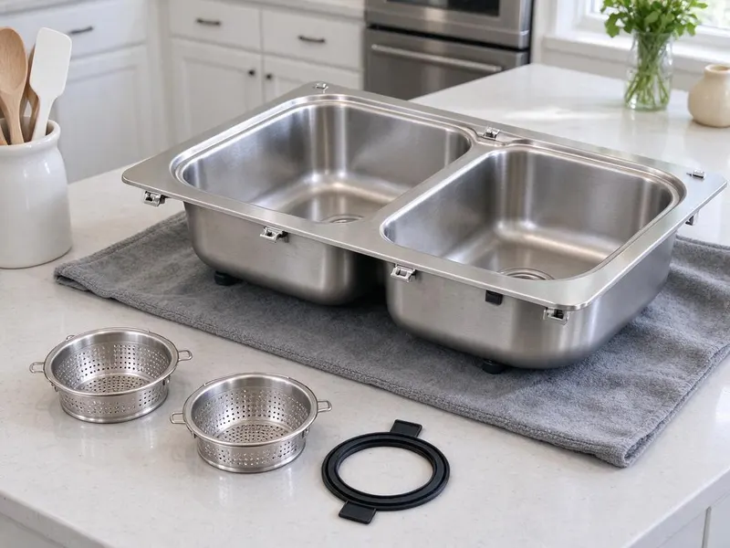

Kitchen Sink Installation in Edinburg, TX
Need a new kitchen sink installed in Edinburg, TX? DFJ Plumbing provides reliable, professional service for all types of kitchen sinks.
- Fast, Reliable Service
- Expert Plumbers
- Fair Pricing
- Guaranteed Work
Ready for a New Kitchen Sink Installation in Edinburg, TX?
Our team is standing by to help you choose and install the perfect kitchen sink.
Your Go-To for Kitchen Sink Installation in Edinburg, TX
DFJ Plumbing specializes in professional kitchen sink installation across Edinburg, ensuring every new sink is fitted securely and correctly. We handle everything from disconnecting your old sink to plumbing in your new one, making sure all connections are watertight and up to code for Texas homes.
Our expertise includes:
- Precise fitting for all sink types
- Leak-proof drain and faucet connections
- Adherence to local plumbing codes

Additional Kitchen Plumbing Services in Edinburg, TX
Our kitchen plumbing services in Edinburg, TX cover sinks, disposals, dishwashers, and grease traps so your kitchen stays clean, safe, and fully functional.


Customers
Why Choose DFJ Plumbing for Kitchen Sink Installation in Edinburg, TX?
Choosing the right plumber for kitchen sink installation is crucial for long-term reliability. We use only high-quality materials and proven techniques to ensure your new sink performs flawlessly.
- Local Expertise, Our plumbers are familiar with Edinburg’s specific water pressure and piping systems, ensuring tailored installation.
- Quality Workmanship, We guarantee a precise, leak-free installation, using durable parts for lasting performance in your kitchen.
- Fast Service, We work efficiently to minimize disruption, getting your new kitchen sink installed and ready for use quickly.
Citywide Coverage
No matter where you are in Edinburg, TX, DFJ Plumbing provides reliable kitchen sink installation services. We cover the entire metropolitan area, ensuring quick response times and consistent quality for all our customers.
Experienced Team
The expert plumbers at DFJ Plumbing are highly trained in all aspects of kitchen plumbing, including complex sink installations. They bring years of hands-on experience to every job, providing clean, efficient, and code-compliant service that you can trust.
Safety-First Approach
At DFJ Plumbing, we meticulously follow all local and state plumbing codes during every kitchen sink installation. This commitment to safety protects your home and ensures your new sink operates reliably without any compliance issues.
Trusted Certified Edinburg Plumbing Services Professionals
At DFJ Plumbing, we take pride in providing certified plumbing services throughout Edinburg, TX. Backed by recognized industry credentials, our experienced plumbers combine technical skill with genuine customer care. Whether it is repair, installation, or maintenance, we follow strict safety and quality standards to deliver long-lasting results you can trust.
Call Us Now PHCC Plumbing Contractor Recognition
PHCC Plumbing Contractor Recognition Better Business Bureau (BBB) Accreditation
Better Business Bureau (BBB) Accreditation Angi Certified Pro
Angi Certified Pro ISO 9001 Quality Management Certification
ISO 9001 Quality Management CertificationReliable Kitchen Sink Installation Services in Edinburg, TX
Stainless Steel Sink Installation in Edinburg
Stainless steel sinks are a popular choice for their durability and ease of cleaning, especially in busy Texas kitchens. We specialize in installing all gauges and styles of stainless steel sinks, ensuring proper support and watertight seals for years of use. Our team handles both top-mount and under-mount configurations, making sure your new sink integrates seamlessly with your countertops and cabinetry. We also connect all related plumbing, including faucets and garbage disposals.

Farmhouse Sink Installation in Edinburg, TX
Farmhouse or apron-front sinks add a distinctive aesthetic to any kitchen, but their installation requires specific expertise due to their weight and unique mounting requirements. DFJ Plumbing provides precise farmhouse sink installation, ensuring the sink is adequately supported within your cabinetry and properly aligned with your countertop. We carefully manage the plumbing connections, which can differ from standard sinks, to prevent leaks and ensure efficient drainage. This specialized service guarantees a beautiful and functional focal point for your kitchen.
Composite Sink Installation in Edinburg
Composite sinks, made from materials like granite or quartz composites, offer excellent durability and a wide range of colors to match your kitchen decor. Installing these sinks requires careful handling to prevent damage and ensure a perfect fit. Our plumbers in Edinburg are experienced with composite sink installation, using appropriate tools and techniques for secure mounting and sealing. We ensure all drain and faucet connections are tight and leak-free, providing you with a long-lasting and attractive kitchen fixture.
Under-mount Sink Installation in Edinburg, TX
Under-mount sinks provide a sleek, seamless look, making countertop cleaning easier. Their installation is more complex than top-mount sinks, requiring precise measurements and strong adhesive or clips for secure attachment to the underside of the counter. DFJ Plumbing excels in under-mount sink installation, ensuring a robust bond and a perfectly sealed edge to prevent water infiltration. We ensure the cutout is smooth and the sink is perfectly level for optimal drainage.
Top-mount Sink Installation in Edinburg
Top-mount, or drop-in, sinks are a common and straightforward option for many Texas homes. While simpler to install, proper sealing and alignment are still crucial to prevent water damage and ensure stability. Our plumbers in Edinburg efficiently install top-mount sinks, applying high-quality sealant around the rim to create a watertight barrier. We make sure the sink is securely fastened and all plumbing connections, including the faucet and drain, are properly tightened and tested for leaks.
Commercial Kitchen Sink Installation in Edinburg, TX
Commercial kitchens in Edinburg have unique demands, requiring heavy-duty sinks that can withstand constant use and meet strict health codes. DFJ Plumbing offers expert installation of commercial kitchen sinks, including multi-compartment sinks, prep sinks, and handwash stations. We ensure all installations comply with local health regulations and provide robust plumbing connections for high-volume usage. Our service minimizes downtime for your business, getting your new commercial sink operational quickly and reliably.
Emergency Sink Replacement in Edinburg
A sudden sink failure, such as a severe crack or burst pipe, can bring your kitchen to a halt. DFJ Plumbing provides emergency sink replacement services in Edinburg to quickly restore your kitchen's functionality. We can often provide same-day installation for common sink types, helping you mitigate water damage and disruption. Our team works fast to disconnect the old, damaged sink and install a new one, ensuring all essential plumbing is reconnected securely.

New Construction Sink Plumbing in Edinburg, TX
For new home builds or major kitchen renovations in Edinburg, TX, proper rough-in plumbing for kitchen sinks is essential. DFJ Plumbing works with contractors and homeowners to install all necessary drain lines, water supply lines, and vent piping according to blueprints and local codes. We ensure the plumbing is perfectly positioned for your chosen sink and faucet, preventing costly adjustments later. Our meticulous approach guarantees a solid foundation for your kitchen's plumbing system.
Kitchen Sink Installation Near Me in Edinburg, TX
When you search for "kitchen sink installation near me" in Edinburg, TX, DFJ Plumbing is your trusted local expert. Our experienced plumbers are familiar with the area's plumbing infrastructure and can quickly respond to your needs, providing efficient and reliable service right in your neighborhood.
We pride ourselves on being the go-to plumbing company for kitchen sink installation across Edinburg. Our local presence means faster service, personalized attention, and a deep understanding of the specific plumbing requirements for homes and businesses in our community.
DFJ Plumbing at a Glance
- Fully licensed plumbing team covering Edinburg, TX
- Same-day appointments and 24/7 emergency response
- Upfront, flat-rate pricing before work begins
- 4.9-star rated by 812+ Texas customers
Edinburg Map
Edinburg Information
- Population
- 105,799
- Area codes
- 956/956/361
- Service area
- Edinburg and communities within 40 miles
- Nearby
- McAllen, Pharr, Mission, Harlingen
Given Texas's expansive clay soils, proper kitchen sink installation with flexible, durable plumbing connections is crucial to prevent leaks that could lead to costly foundation issues for homes in Edinburg, TX.
Expert Services
Trust our professionals for reliable DFJ Plumbing solutions in Edinburg, TX.
Our Specialized Plumbing Services in Edinburg, TX
At DFJ Plumbing, we provide a complete range of plumbing services across Edinburg, TX. From leak detection to full system installations, our team ensures fast, precise, and affordable service for both residential and commercial properties. Explore our core services below:


How Our Kitchen Sink Installation Process Works in Edinburg, TX
Our kitchen sink installation process is designed for efficiency and minimal disruption to your home. We handle every step with precision, from initial assessment to final testing.
Request a Quote
Call us at (737) 405-5978 or fill out our online form to schedule an appointment. We will discuss your sink installation needs and provide a transparent estimate.
Site Preparation
Our team will arrive on time, prepare the workspace, and carefully remove your old sink if applicable. We take care to protect your countertops and cabinets.
Precise Installation
We expertly install your new sink, securing it properly and connecting all plumbing components. This includes the faucet, drain, and any garbage disposal units.
Frequently Asked Questions About Kitchen Sink Installation in Edinburg
The cost of kitchen sink installation in Edinburg typically ranges from $200 to $600 for labor, depending on the sink type, complexity of the installation, and any necessary modifications to existing plumbing. This does not include the cost of the sink itself, which can vary widely.
DFJ Plumbing can install all common types of kitchen sinks, including stainless steel, cast iron, composite, fireclay, and copper. We handle various mounting styles like top-mount, under-mount, and farmhouse (apron-front) sinks, ensuring a professional fit for any material.
Most standard kitchen sink installations can be completed within 2 to 4 hours. However, more complex jobs, such as installing a farmhouse sink, modifying cabinetry, or replacing significant plumbing lines, might take longer, potentially up to a full day.
Yes, DFJ Plumbing stands behind all our work. We offer a warranty on our labor for kitchen sink installations, ensuring your peace of mind. Specific warranty details will be provided with your service agreement, covering any issues arising from our workmanship.
While DIY sink installation is possible, it is often best to hire a professional, especially for under-mount or farmhouse sinks. Improper installation can lead to leaks, water damage, and costly repairs down the line. Our plumbers ensure a correct, leak-free, and code-compliant setup.
Yes, absolutely. Our comprehensive kitchen sink installation service includes connecting and testing your new faucet and garbage disposal unit. We ensure all components work together seamlessly and are properly sealed to prevent leaks.
In most cases, replacing an existing kitchen sink with a similar type does not require a permit in Edinburg. However, if you are relocating the sink, altering major drain lines, or making significant changes to the plumbing system, a permit may be necessary. We can advise you on local code requirements.
We install all major reputable brands of kitchen sinks, including Kohler, Moen, Elkay, Blanco, Franke, and Kraus. While we do not sell sinks directly, we can offer recommendations based on your budget, style preferences, and the specific demands of your kitchen in Texas.
What People Are Saying About Our Plumbing Experts?

Daniel K.
A pipe burst at 11 pm and they actually answered. The plumber showed up within the hour, shut everything down, and had us back to normal the next morning. Could not ask for more.
Emergency Plumbing · Pharr, TX
Patricia H.
We had a slab leak that two other companies could not find. DFJ Plumbing located it in under an hour, explained our options, and the price matched the quote to the dollar.
Slab Leak Repair · Harlingen, TX
Laura S.
I scheduled a water heater replacement, and the team made the process smooth and affordable. The new unit works perfectly, and they cleaned up after completing the job.
Water Heater Replacement · Harlingen, TX
James P.
Our commercial plumbing system had a leak under the sink, and DFJ Plumbing handled it professionally. The plumbers arrived quickly and restored everything without disruption to our customers.
Commercial Plumbing · McAllen, TXSofia M.
Two new toilets installed in one visit, no mess left behind, and the tech even adjusted a faucet he noticed was dripping. Fair pricing and really friendly.
Toilet Installation · Corpus Christi, TXRobert G.
The trenchless sewer replacement saved our front yard. They walked us through the camera inspection footage first so we knew exactly what we were paying for.
Sewer Line Replacement · Mission, TX